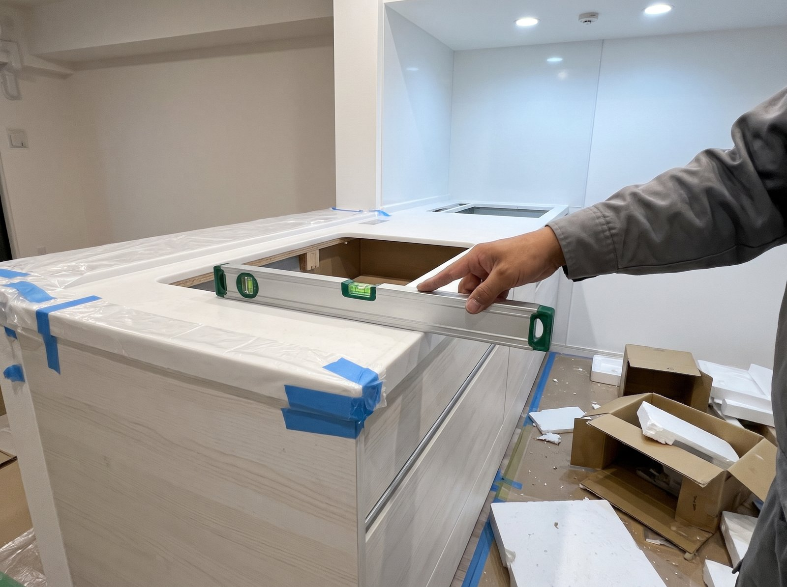
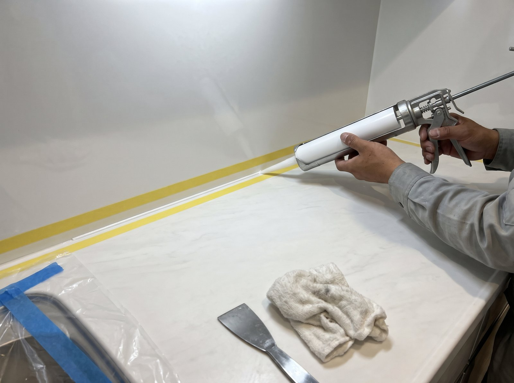
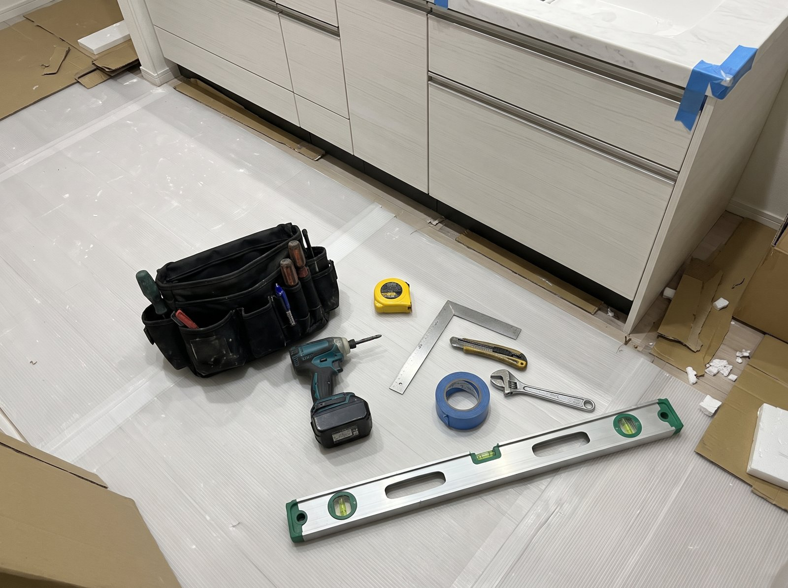
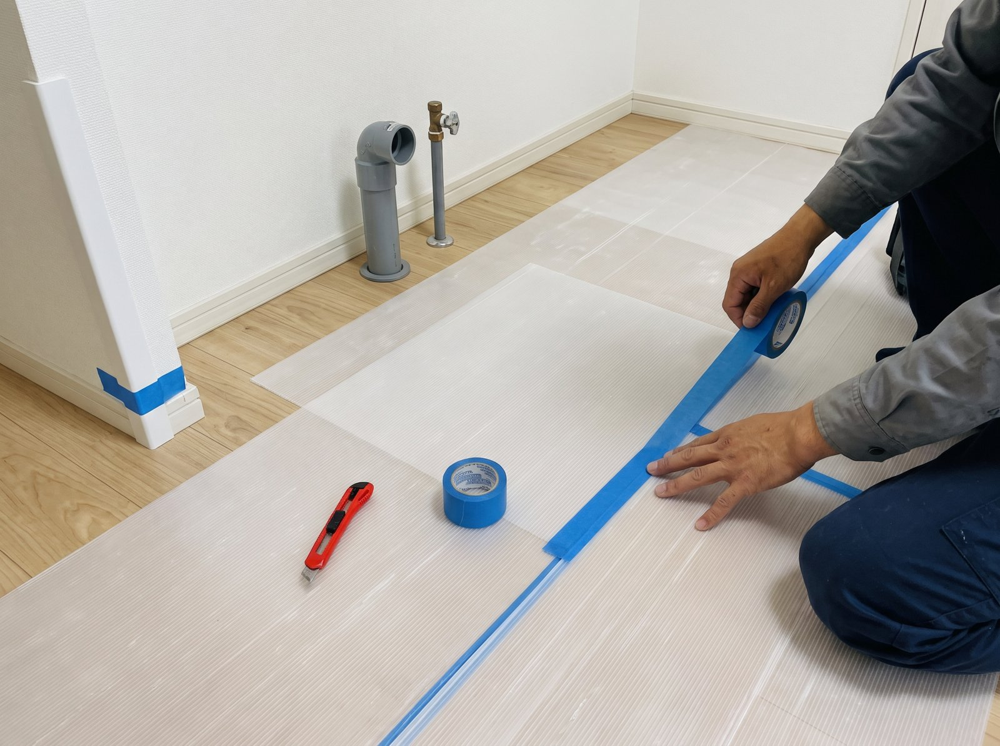
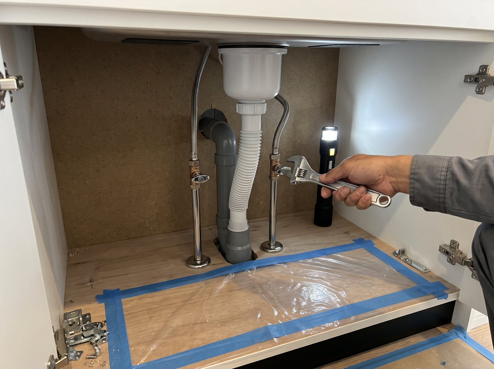
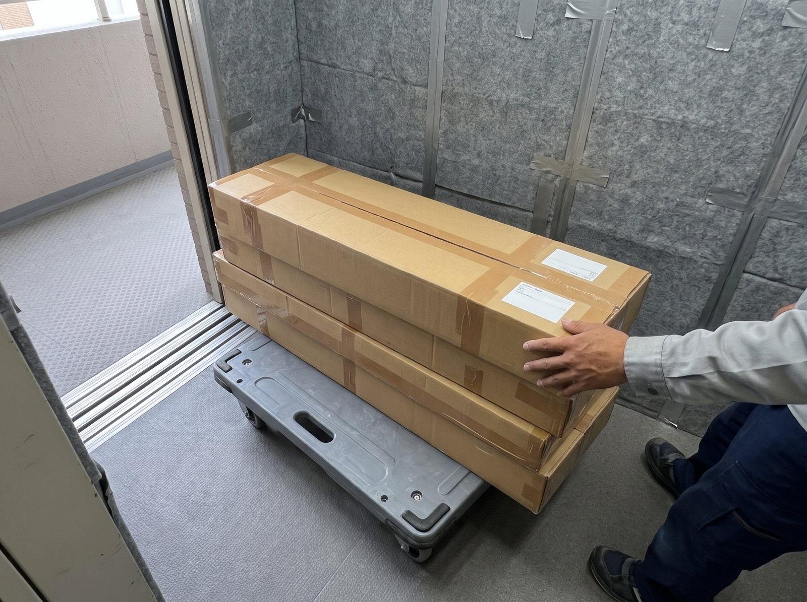
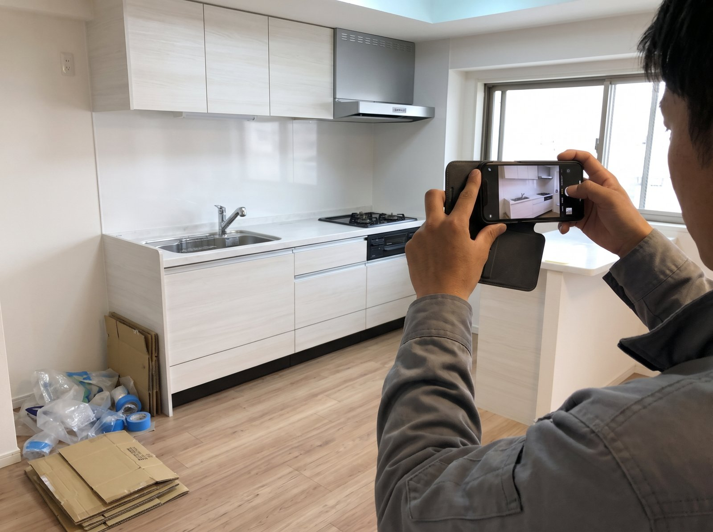

マンション｜システムキッチン交換
4階への手上げ搬入から据え付けまで。重量のある部材の運び込みも含めて、1台を納めました。
- メーカー
- TOTO
- シリーズ
- ザ・クラッソ
- 建物
- マンション 4階
- 作業
- 搬入・据え付け
マンション東京都渋谷区

4階への手上げ搬入から据え付けまで。重量のある部材の運び込みも含めて、1台を納めました。



都内から離れた現場でも、一都三県なら伺います。2階への手上げ搬入を含め、1台を据え付けました。

道路から現場までの横持ちと、階段での手上げが必要な現場。搬入経路を確認したうえで、据え付けまで行いました。

工務店さまからのご依頼。事前の現場調査で寸法と配管位置を確認し、当日は据え付けと調整まで行いました。
新築建売住宅のカップボード（食器棚）取り付け。壁の下地補強とコンセントの追加にも、その場で対応しました。
キッチン本体はそのままに、扉の面材交換と吊戸棚の取り付け。タワーマンションでの搬入や、部分的なリフォームのご依頼にも対応しています。


掲載している写真は、作業の様子をイメージしたものです。